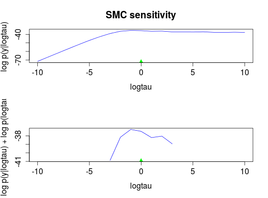

biips_smc_sensitivity(object, param_values, n_part, ...)
biips model object as returned by
biips_model.rs_thres and rs_type.
See biips_smc_samples for more details.biips_smc_sensitivity returns a list with the following
members:
log_marg_like.log_marg_like value.log_marg_like_pen.log_marg_like_pen value.Sensitivity analysis of parameters with SMC
modelfile <- system.file('extdata', 'hmm.bug', package = 'Rbiips') stopifnot(nchar(modelfile) > 0) cat(readLines(modelfile), sep = '\n')var c_true[tmax], x_true[tmax], c[tmax], x[tmax], y[tmax] data { x_true[1] ~ dnorm(0, 1/5) y[1] ~ dnorm(x_true[1], exp(logtau_true)) for (t in 2:tmax) { c_true[t] ~ dcat(p) x_true[t] ~ dnorm(0.5*x_true[t-1]+25*x_true[t-1]/(1+x_true[t-1]^2)+8*cos(1.2*(t-1)), ifelse(c_true[t]==1, 1/10, 1/100)) y[t] ~ dnorm(x_true[t]/4, exp(logtau_true)) } } model { logtau ~ dunif(-3, 3) x[1] ~ dnorm(0, 1/5) y[1] ~ dnorm(x[1], exp(logtau)) for (t in 2:tmax) { c[t] ~ dcat(p) x[t] ~ dnorm(0.5*x[t-1]+25*x[t-1]/(1+x[t-1]^2)+8*cos(1.2*(t-1)), ifelse(c[t]==1, 1/10, 1/100)) y[t] ~ dnorm(x[t]/4, exp(logtau)) } }data <- list(tmax = 10, p = c(.5, .5), logtau_true = log(1), logtau = log(1)) model <- biips_model(modelfile, data)* Parsing model in: /home/adrien-alea/workspace/biips-git/Rbiips/inst/extdata/hmm.bug * Compiling data graph Declaring variables Resolving undeclared variables Allocating nodes Graph size: 169 Sampling data Reading data back into data table * Compiling model graph Declaring variables Resolving undeclared variables Allocating nodes Graph size: 180n_part <- 50 logtau_val <- -10:10 out_sens <- biips_smc_sensitivity(model, list(logtau = logtau_val), n_part)* Analyzing sensitivity with 50 particles |--------------------------------------------------| 100% |**************************************************| 21 iterations in 0.10 spar(mfrow = c(2, 1)) plot(logtau_val, out_sens$log_marg_like, type = 'l', col = 'blue', xlab = 'logtau', ylab = 'log p(y|logtau) ', main = 'SMC sensitivity') points(data$logtau, min(out_sens$log_marg_like), pch = 17, col = 'green') plot(logtau_val, out_sens$log_marg_like_pen, type = 'l', col = 'blue', xlab = 'logtau', ylab = 'log p(y|logtau) + log p(logtau)')plml <- out_sens$log_marg_like_pen ymin <- min(plml[is.finite(plml)]) points(data$logtau, ymin, pch = 17, col = 'green')